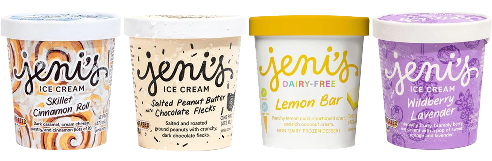
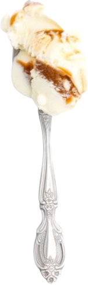
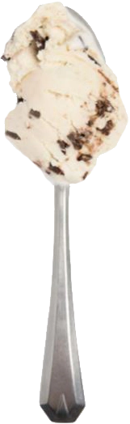
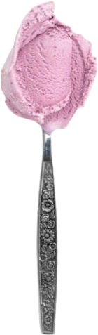
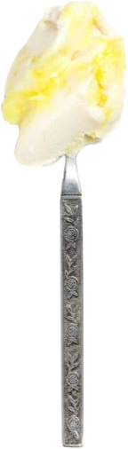

Trying Jeni’s Splendid Ice Cream
Feb 21 - Written by Bonnie and Emily
It's the ice cream that’s been floating around on all our Instagram feeds! After having seen countless influencers and posts about Jeni’s Splendid Ice Creams, we had to give it a try!
One of the great things about Jeni’s is that they deliver nationwide so no matter where you are in the United States, you can try it for yourself. Though it's a bit pricier than your average Ben & Jerry’s and Haagen Dazs, their unique flavor combinations are worth a try. Now, we only sampled a few of their flavors but we’d have to say their flavors are quite spot on.
Skillet Cinnamon Roll

Bonnie’s Review
This was definitely a new flavor experience for me, I love cinnamon rolls but never thought it could turn up in ice cream form. Although the initial taste of the ice cream had a really strong vanilla flavor, there was still a tangy element to the ice cream that gave the kick that made it a cinnamon roll flavor. Although the frosting flavors overpowered the cinnamon a little in the ice cream it was made up for in the actual cinnamon roll chunks that are found buried in the pint. This ice cream tastes pretty similar to a cinnamon roll but what really gives its flare are those delicious pastry chunks!
Emily's Review
As I love making and eating cinnamon rolls, it was a no brainer to try this flavor out. The initial flavor you taste is the cream cheese frosting, its sweet, creamy, and tangy providing a solid base to this ice cream flavor. The cinnamon swirls are packed full of cinnamon giving you all the components of a cinnamon roll minus the fluffy bun. Although, this flavor does include some of the pastry in the ice cream, I didn’t get any in my taste but overall, it is good and taste exactly as it is advertised.
Salted Peanut Butter with Chocolate Flecks

Bonnie’s Review
I have to admit I’m not the biggest peanut butter fan but I guess in ice cream form its really not that bad. The pint definitely had strong roasted peanut butter flavors and the small chocolate chunks add some nice texture to the ice cream. Keep in mind the chocolate flecks were more of a dark chocolate that helped balance out the strong flavors of the peanuts butter too! Its a good mixture of different elements and I would reach for this flavor again even not as an avid peanut butter lover.
Emily's Review
Growing up, I’d sometimes have a spoonful of peanut butter as a snack, that is how much I loved peanut butter. Now, I still love it but not as much as I used to. This ice cream tastes exactly like peanut butter with the addition of bits of chocolate in it. It’s like a deconstructed peanut butter cup but with a whole lot more peanut butter and much much creamier. If you;re a peanut butter lover then you would love this flavor.
Wildberry Lavender

Bonnie’s Review
If you don’t already know, I’m a huge sucker for anything that's lavender flavor. I definitely had lots of high hopes for this one and was ready for a whiff of delicious floral ice cream. But, of course it was a lavender and wildberry flavor and knowing our experience with berry flavored matcha it tends to overpower other flavors a lot. Which is why this wildberry lavender ice cream did end up being more of a wildberry ice cream, but if you enjoy a nice berry flavor then its definitely a delicious one to reach for!
Emily's Review
When I first saw this flavor, I knew I had to try it as I haven’t had lavender ice cream in a very long time. However, when I first took a bite, I was disappointed by the lack of lavender flavor. Now, if I had paid more attention then I would have noticed that this flavor is more than just lavender, it's also wildberry which means there is a strong berry flavor present with just a hint of lavender. I’m not complaining though because it is a very good, fruity flavor but I was just hoping there would be more lavender.
Lemon Bar (Dairy Free)

Bonnie’s Review
I love lemon flavored items and so this was a must pick!! Since this was a dairy free flavor and mainly used coconut in its ingredients to get that creamy consistency, this ice cream definitely had an intense coconut flavor. Lucky for me, I am both a coconut and lemon fan and so this was honestly a delicious pint of ice cream! The swirls of tart lemon curd amongst the coconut ice cream based was honestly such a delightful mix. There was also some coconut flakes that gave some texture to the icecream that I actually enjoyed with the lemon curd. But, to be fair, since this flavor was so coconut heavy this leaned more towards a coconut flavored ice cream instead of a lemon bar ice cream. But as a strong coconut and lemon flavor fan, I’m stocking up on this!
Emily's Review
The first recipe Bonnie and I followed was for lemon bars and so it made sense to give this one a shot. Now this flavor is dairy free and is coconut cream based so there is a very coco nutty flavor. The lemon curd is tart and compliments the coconut cream base very well. If you get the perfect bite of lemon curd, ice cream, and the shortbread, it tastes nearly identical to a lemon bar. As I was trying this flavor, I noticed there were also coconut flakes in there which add more texture to the ice cream but I found it to be a bit off putting as it drew away from the lemon bar feel. Now this flavor is heavy on the coconut flavor so if you are not a fan of coconut, I wouldn’t recommend this flavor.
All these interesting and unique flavors definitely make Jeni’s worth the hype. However, we’d say you definitely have to be particularly careful with the flavors you choose as some of them may not be what you’d expect. As we have tried many ice cream shops throughout NYC and locally, Jeni’s definitely makes it on the lists of ice creams we’d get again.